Flexbox
Flexbox oferece um jeito dinâmico de organizar itens em um container com CSS.
Utilizamos como controle um container com 5 itens. Este container inicial não tem flex, e assim se organiza verticalmente.
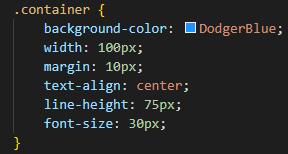
Se adicionarmos display: flex ao CSS deste container, com as propriedades padrões, ele se organiza desta forma.
Em um container com flex, podemos utilizar flex-direction para modificar a direção em que se organiza. O valor padrão é "row".
row

row-reverse
column
column-reverse
Podemos utilizar "flex-wrap" para garantir que, se não houver espaço na linha em que o container está, ele irá colocar o resto na próxima linha. O valor padrão, sem wrap, é "nowrap".
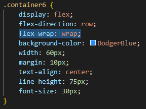
Há tambem a opção "wrap-reverse", que coloca os itens que sobram na linha de direção oposta ao padrão.
Para organizar o código, podemos condensar as opções "flex-direction" e "flex-wrap" em uma única linha com a propriedade "flex-flow".
O primeiro parâmetro será a configuração de direction e o segundo a configuração de wrap.
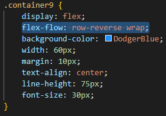
Podemos organizar a posição dos itens dentro do container, de forma que vão se organizar conforme o container muda de tamanho. Esta propriedade se chama "justify-content".
Há 6 opções principais para justificar os itens.
flex-start
Com "flex-start" os itens serão jogados para o ponto inicial da direção escolhida com "flex-direction".
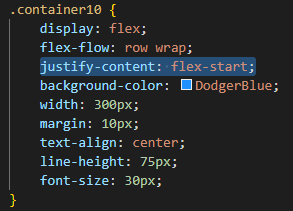
flex-end
Com "flex-end" os itens serão jogados para o ponto final da direção escolhida com "flex-direction".
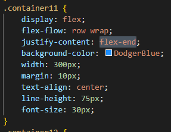
center
Com "center" os itens serão jogados para o centro da linha no container.

space-between
Com "space-between" os itens serão distribuídos de forma consistente na linha, com o primeiro no início da linha e o último no fim da linha.
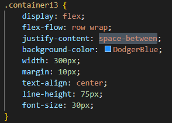
space-around
Com "space-around" os itens serão distribuídos de forma consistente na linha, com espaços similares entre cada item.
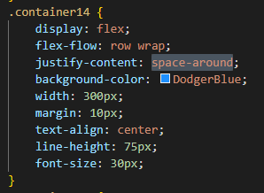
space-evenly
Com "space-evenly" os itens serão distribuídos de forma consistente na linha, com espaços iguais entre cada item.

Há também uma forma de organizar os itens internos no outro eixo, que também depende da direção configurada. Para isso, utilizamos "align-items".
Há 5 opções principais.
Obs.: Há um pontilhado em volta de cada item interno para que se observe como seus tamanhos se organizam em cada configuração.
flex-start
Com "flex-start" os itens serão jogados para o ponto inicial do eixo.

flex-end
Com "flex-end" os itens serão jogados para o ponto final do eixo.
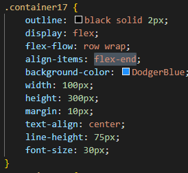
center
Com "center" os itens serão jogados para o centro do eixo.

stretch
Com "stretch" os itens serão esticados para encaixar no eixo, obedecendo limites de tamanho.
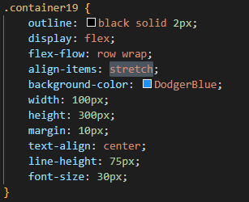
baseline
Com "baseline" os itens serão jogados para o eixo central que o texto segue.
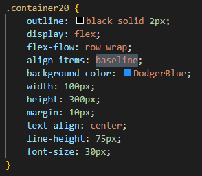
Podemos controlar o espaço entre itens no container com a propriedade "gap".
Existem propriedades específicas. "row-gap" para controlar o espaço vertical, e "column-gap" para o horizontal. Mas utilizar "gap" permite condensar os dois em uma linha.
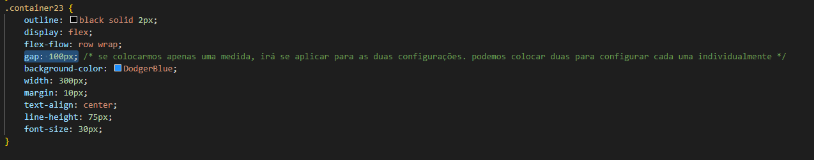